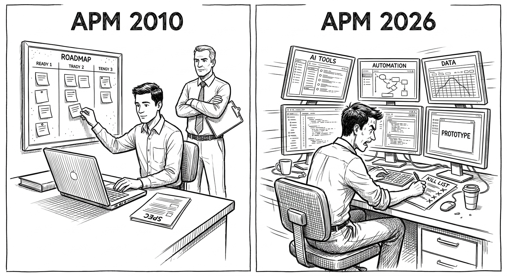
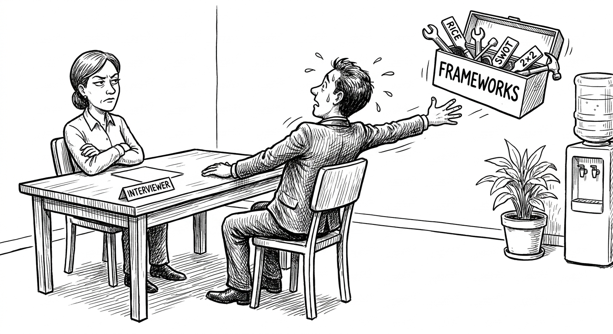
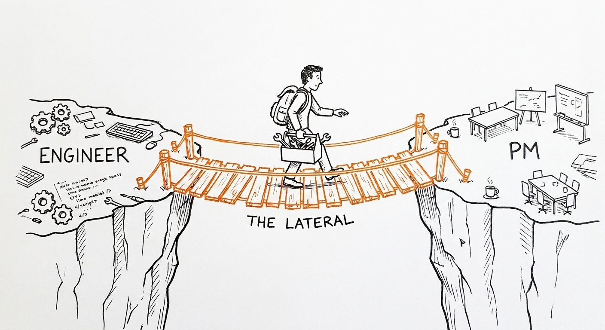
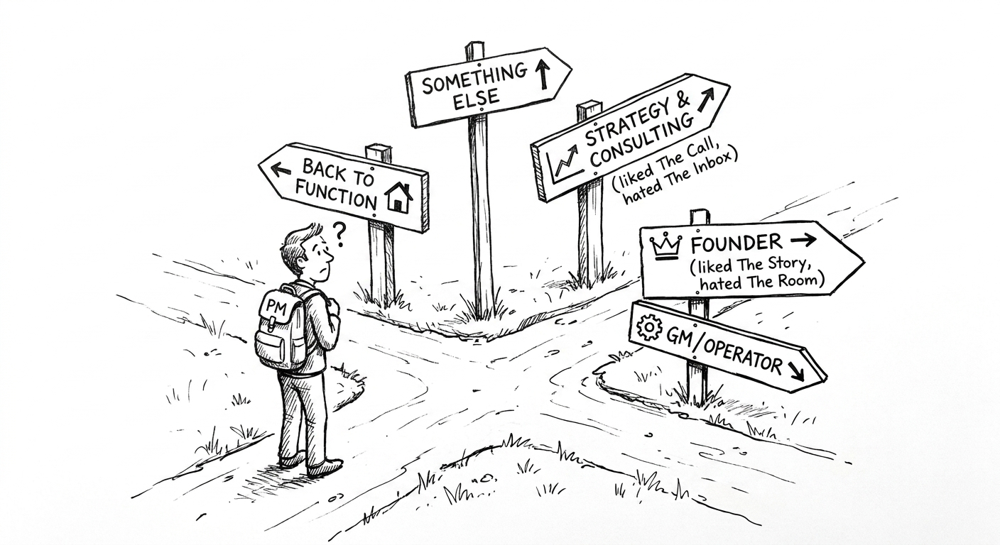
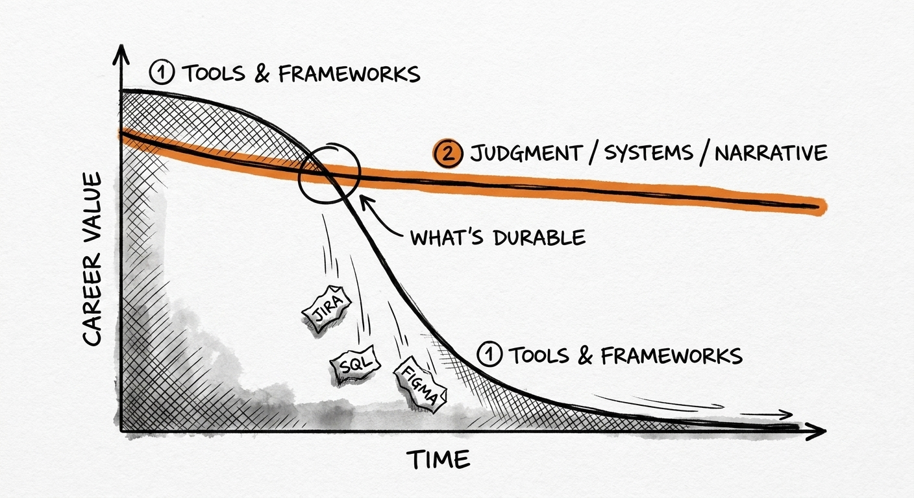

Chapter 7 Paths in, paths out
You did the exercises in Chapter 6. You felt something.
If it was mostly dread, skip to Section 7.2. No judgment. Better to know now than to spend two years finding out.
If it was mostly energy — even anxious energy — this chapter is for you first. Wanting to be a PM and becoming one are different problems. AI changed both.
Before we get into paths, one honest calibration: the market for PM roles in 2026 is not what it was in 2021. The hiring surge that followed the pandemic has corrected. Headcount is flat or declining at most companies, and AI is absorbing coordination and documentation work that used to justify PM headcount. Getting in is harder than it was. That doesn't mean it's impossible. It means you need to be more specific about why you want this job and more prepared before you show up to interview.
7.1 Paths in
There is no canonical path. There never was. But AI broke the apprenticeship model, so the traditional entry routes are worse and some new ones actually work now.
One conviction before the list: in my experience coaching people through PM transitions, the candidates who most consistently surprised hiring managers were not the ones with the most conventional backgrounds. The urban planner who understood why cities fail people. The nurse practitioner who had lived inside clinical workflows for a decade. The musician who understood how people discover and develop taste. Non-traditional backgrounds produce non-traditional lenses — and the PM who understands the user in a way the company's engineers and designers don't is a PM who contributes something the team cannot synthesize on its own. An MBA is not the canonical path. An engineering background is not required. What runs through every successful PM transition I've seen is not which path was taken — it's that the person could demonstrate genuine understanding of a specific problem and genuine instinct about how to solve it.
7.1.1 APM: The classic, compressed
Before: Associate PM programs at Google, Meta, Microsoft, Uber. Two-year rotation. You wrote specs, shadowed Senior PMs, did the low-risk work that taught you the patterns. The apprenticeship was baked in. You didn't need to know anything before day one because the program assumed you didn't.
The model worked because the work itself was the training. A spec that ships tells you more about tradeoffs than a case study. A launch post-mortem you were in the room for stays with you. The apprenticeship structure was a feature, not an inefficiency — calibrated exactly to produce PMs who had earned their reps before they owned anything.

After: AI does the low-risk work. APM programs know this. They're hiring fewer APMs, they're hiring them later, and they're expecting judgment faster. The programs that do still exist are explicitly for people who have already shipped something — not something impressive, just something real that real people used.
What an APM program actually looks like now, day one:
You arrive at week one not to shadow but to be assigned. The structure after that is more substantive than the compressed version circulating in 2026 advice threads.
At Meta, the program is called Rotational PM — an IC3 role that takes both recent graduates and experienced professionals who didn't clear IC4 but whom Meta considered worth a high-touch investment. Three rotations at six months each: eighteen months total. At Google, APMs complete two rotations of one year each — two years total — with most converting to a permanent team at the end.
What both programs are evaluating is not a portfolio of one shipped thing and one killed thing. It's proof of competency at IC4 — or a convincing arc toward it — across the full assessed skill set: scoping, execution, judgment, stakeholder management. The programs are designed to build loyalty as much as capability. You rotate broadly across the company; they get a PM who already knows how the place works before they're ever operating fully independently.
Day one typically involves: reading a stack of PRDs going back twelve months, attending a sprint review you understand about thirty percent of, and having a thirty-minute "welcome" with your manager in which you learn your manager is stretched across two other PMs. No one hands you a spec to write. No one explains the process. You figure it out by reading what the previous person wrote and asking the engineer lead what was wrong with it. If that sounds like sink-or-swim, that's because it is, and the program structure is largely cosmetic around it.
How to get in, 2026:
Ship something. The bar is low: a Chrome extension, a Notion template with a hundred users, a Discord bot, a weekend project that solved a problem you had. AI makes building faster, which means "I built this" is table stakes now, not a differentiator. But "I built this, watched users use it, and changed it based on what I learned" is still meaningful. The key phrase is "changed it based on what I learned." That's the entire job in miniature.
Write a teardown. One page. Pick a product with a real flaw, diagnose the problem specifically, propose a solution with tradeoffs named. Send it to someone who works there. Unsolicited. If it's good, it gets forwarded. If it's wrong, you learn something. The point isn't to be right. The point is to demonstrate a mode of thinking that doesn't stop at "this UX is bad" but continues to "here's the mechanism causing the bad UX and here's what I'd test first to fix it."
Get a referral from someone whose referral means something. Not "she's smart." "She sent me this doc and it changed how I thought about our retention problem." That's the referral that moves.
Timeline reality check: If you are starting from zero — no PM experience, no shipped product, no network in the space — the realistic timeline from "I want to be a PM" to "I have an APM offer" is twelve to eighteen months in 2026. That assumes you're actively building, writing, networking, and applying during that entire period. The people who compress it to six months typically have an engineering or design background and a shipped side project already. The people who stretch it to three years are usually waiting for permission to start.
Startup APM: No program. No rotation. You become APM by being the engineer or designer who writes the first PRD and lives to tell about it. The path is informal: you're doing PM work while your title says something else, someone notices, and eventually your title changes. The risk is that it never changes and you spend two years doing two jobs for one salary. Before you do this, get explicit agreement on what "transition to PM" means and what the conditions are. Put it in writing.
Scale-up APM: Programs exist but are half the size they were in 2021. They hire ex-engineers and ex-designers who "want to go to the product side," because those people already have the technical and craft context the program used to teach. If you're coming from engineering or design, this is actually a favorable moment — the bias in your direction is real.
Mega-corp APM: Still exists. The bar is: you could have been a founder. Because the tools to be a founder are free, and if you chose not to, they want to know why. The honest answer "I want to work on something with more distribution than I could build alone" is fine. The dishonest answer "I prefer the stability" will get you through the screen and miserable in year two.
What interviewers actually look for now (not frameworks):
The frameworks — RICE, CIRCLES, jobs-to-be-done — are known. AI can generate framework answers in seconds. Interviewers know this.

What they're looking for instead:
Judgment signals under pressure. They ask an ambiguous question and watch whether you reach for a framework to feel safe or sit with the ambiguity and think out loud about what actually matters. The candidate who says "before I answer, I want to understand who the primary user is in your version of this problem" is more interesting than the candidate who launches into a prioritization grid.
Evidence of caring about the right things. At the end of the product critique exercise, the question is not whether you found the right flaw. It's whether you looked at the product as a system with a user in it, or as a surface with features on it. The candidate who says "the onboarding is slow" is describing a feature. The candidate who says "there's a gap between what users expect to be able to do in the first session and what the product actually lets them do — and here's the specific friction point where they drop off" is describing a problem.
Self-awareness about what they don't know. The best PM candidates say "I don't know" when they don't know, and then immediately follow with what they'd do to find out. The ones who paper over gaps with confidence are the ones who make expensive decisions on wrong assumptions six months into the job.
Evidence that they've been wrong and updated. Not performative humility. Real stories. "I built this thing. I assumed X. Users did Y instead. I changed Z." If every story ends with the candidate being right, they either haven't shipped enough or they're editing their history.
7.1.2 The lateral: From another function
Most PMs didn't start as PMs. They started as something else and got tired of waiting for the PM to decide. The lateral move is still the most common path into PM, but it requires more intentionality in 2026 than it did in 2019.
From Engineering

You're tired of building the wrong thing. You already understand the technical constraints better than your PM. You've started writing the spec before anyone asked.
AI impact: You can now prototype the right thing yourself, before the PM conversation happens. Use that. Your interview is not a resume. It's the PRD and prototype you built for the problem you believed in and the PM didn't.
What the transition actually requires: You need to give up the comfort of being right in ways that are verifiable. Engineering is legible. You wrote a function. It works or it doesn't. PM is not legible on short timescales. You make a bet in March and find out in October whether it was right. Some engineers find this tolerable. Others find it maddening. The question is not whether you can handle uncertainty abstractly — everyone says they can. The question is whether you've ever stayed convinced of a decision for three months with no confirming feedback. If yes, you probably have the disposition. If not, simulate it: make a prediction about a product in public, give yourself a ninety-day window, and see how you feel at day forty-five when you have no idea if you were right.
The risk nobody names: You'll miss the flow state of building. PM is not building. It is deciding what to build, then watching other people build it, then explaining why it shipped the way it did. If you loved being in the code, stay there. PM is not a promotion. It is a different job with worse hours and more blame. The engineers who thrive in the transition are the ones who never much liked the building itself — who liked the puzzle of what to build and only tolerated the implementation. If you liked the implementation, you are about to voluntarily remove the thing you liked from your job description.
Timeline from engineering: Three to six months if you're transitioning internally at a company where you've established credibility. Six to twelve months if you're transitioning externally, which requires a visible portfolio of PM-type work: a published teardown, a shipped side project, ideally a PM-adjacent scope at your current job.
From Design
You're tired of being handed requirements that are wrong. You want to set them.
AI impact: You can generate ten flows before the PM finishes the brief. That speed is your credential. But your portfolio isn't mocks. It's "here is the decision I made, here are the nine options I killed, and here is what the user data said afterward." The shift from "here's what I made" to "here's why I made this instead of something else" is the core of the PM mindset. If you've been doing that thinking but it's been invisible in your design process, making it visible is the job.
What the transition requires: being comfortable with outputs you can't see. Design has a deliverable — something you can look at, something you can show in a portfolio. PM has outcomes, which are messier and harder to attribute. The designer-to-PM transition often goes sideways because the person keeps optimizing for visible outputs — roadmaps, briefs, specs — when the actual job is moving a metric by understanding a system. Start measuring your work by the metric, not the artifact, before you make the formal transition.
The risk: You'll fight with your former peers. Designers will tell you you're "not really a designer anymore." They're right. Decide if you care. The more specific version of this risk: you'll be tempted to over-specify the design because you know how to and the PM you replaced didn't. Over-specifying kills engineering autonomy and trust. Resist it explicitly.
Timeline from design: Similar to engineering — three to six months internal, six to twelve months external. Design-to-PM transitions are slightly harder to credential because the PM-type thinking in design work is often invisible. You'll need to make it explicit: write down the decisions you made, the options you rejected, the data you used. That becomes your portfolio.
From Data
You're tired of being asked "what happened" when you want to work on "what should we do."
AI impact: Everyone can pull data now. Your edge is knowing when the data is wrong. "DAU is up because we broke the event tracking on mobile" is a PM answer. "DAU is up 3%" is a dashboard. The ability to tell the difference — and to say so out loud when the number looks clean but smells wrong — is a compounding advantage. In the AI era, the data analyst who can say "the model's confident but the training data doesn't cover this user cohort" is more valuable than one who can run the SQL faster.
What the transition actually requires: Data people tend to want more information before making a decision. PM requires making decisions with the information available, not the information wanted. The specific adaptation: practice saying "I have 60% of the data I'd want. Here's my decision and here's what would change it." Do that out loud, in meetings, before you have the title. That's the PM move from a data background.
The risk: You'll miss certainty. PM is not certain. You decide with 60% of the information you want and act with 90% of the conviction that implies. If you need to be right, stay in data. You'll be more right, more often, with better justification.
Timeline from data: Data-to-PM is one of the faster lateral paths right now, precisely because AI has made the low-level data work less defensible as a full-time role. Many data analysts are being pushed toward adjacent roles whether they want to be or not. If you want PM, the transition is realistic in four to eight months. The gap to close is demonstration of decision-making, not analysis.
From GTM: Sales, CS, Marketing
You're tired of selling a roadmap you don't believe in. You've spent a year on calls with customers telling you exactly what's broken. You want to fix it.
AI impact: You can now prototype what Sales has been asking for in an afternoon. That is your interview. Build the thing. If it works, you're a PM. If it fails, you'll have a more specific and honest account of why Sales was asking for the wrong solution to the right problem — which is also useful.
What the transition actually requires: GTM backgrounds carry a specific liability in PM interviews: the stories you tell tend to feature you as the hero who saved the deal. PM work rarely features a single hero. The interviewers are listening for whether you can credit the engineer who built the thing, the designer who caught the UX flaw, the data analyst who told you your activation hypothesis was wrong. Practice telling stories where the outcome was right but you were wrong about the mechanism.
The risk: You lose your quota, your commission, your weekly clarity of "did I make my number." PM has no quota. The feedback loop is quarterly at best. The thing you shipped in March might be what drove the December metric. Learning to work without short-cycle feedback is a real adjustment. GTM also often underestimates how much of PM work is internal. Selling to customers is easier than selling to engineers who've heard this request three times before and know why it's harder than it looks.
Timeline from GTM: Six to eighteen months. The upper bound applies when the person has strong domain knowledge but no visible technical or craft foundation. The lower bound applies when the person has built something — even small — and can point to it. Build something before you apply.
7.1.3 The consulting-to-PM path
This is the path nobody wrote a chapter about in 2019 because it was uncommon. It's common now. McKinsey, BCG, Deloitte Digital, Accenture — all of them have accelerated the pipeline of consultants who want to cross into product. And PM hiring managers have developed strong, often accurate heuristics about what they get when they hire from that pool.
Here is what you're working with and against.
What consulting gives you that translates:
You can structure a problem fast. You've done it under deadline, in front of clients, with incomplete data. That's PM work. You can write clearly. You know how to sequence an argument. You've worked with senior stakeholders and survived it. You know how to say "here's the tradeoff" without flinching. These are real assets and they're not uniformly distributed — the PM candidate pool has plenty of people who can't do any of them.
You also typically have deep domain knowledge in at least one sector — healthcare, financial services, logistics, retail — that makes you immediately useful in a product organization addressing that sector. Vertical SaaS companies in particular hire consultants into PM roles specifically because the domain knowledge is harder to teach than the PM mechanics.
What consulting gives you that does not translate:
Slide quality. Frameworks. Quick synthesis in a client presentation. None of these are irrelevant, but they become invisible in PM work — what matters is what shipped, not how well you presented the options. The consulting habit of presenting three recommendations and letting the client choose is the wrong posture for a PM. Your job is to have a recommendation. One. With your name on it.
The deck-first culture is the biggest liability. Consultants learn early that a well-structured slide buys credibility. In product organizations, a well-structured slide without a shipped feature behind it buys suspicion. You'll hear "this is a lot of process for not a lot of product." The antidote is shipping something before you join — and making it the first thing you talk about.
What interviewers actually think when they see your resume:
"Smart. Structured. Probably going to be frustrated by how slow our decision-making is compared to a consulting engagement. Going to want to run a project management methodology on a team that doesn't want to be managed. May have never actually shipped anything. Will be good in the interview and need significant calibration in month two."
Some of that is fair. Some of it is pattern-matching that you can disrupt. Disrupt it by leading with the shipped thing, the real thing, the thing where you made a decision and owned the consequence. Not the PMO engagement. The thing where you could have been wrong and it would have been on you.
The strategy MBA variant: MBAs with consulting backgrounds applying to PM jobs are the most common path in large tech company PM pipelines. The companies know this. They've built interview processes that try to filter for judgment behind the polish. The tell they're looking for: can this person hold a position in a room of smart people who disagree, until the evidence — not the social pressure — changes it? Consultants tend to update quickly to read the room. PMs need to hold positions under pressure. That's the gap. Close it by practicing it: take a position in a conversation, get pushed back on, and don't move until you have a reason. Not a social reason. An evidential reason.
Timeline from consulting: Three to nine months from "I want to make this transition" to first PM offer, assuming you have two years or more of consulting experience. The work is not the resume — it's building visible PM artifacts (teardowns, shipped projects, product opinions in public) that let the interviewer see through the consulting polish to something that looks like product judgment.
7.1.4 The domain expert path: From knowing the problem
This is the most underwritten path into PM, and in my view one of the most powerful.
You are not primarily coming from a tech function. You're coming from deep expertise in the domain the product serves — an urban planner moving into mobility software, a clinician moving into healthtech, a teacher into edtech, a finance professional into fintech. You understand the problem from the inside, not as a user but as someone who has worked within the system the product is trying to change.
This was my own path. Before Social Bicycles, I had been running product development labs at Drexel, designing products for the built environment, and writing about how transit and urban design shape the way cities work. When I arrived at Social Bicycles in New York City — one of the first companies putting GPS-connected smart locks into city bike-share systems — the problems worth solving were not primarily engineering problems. They were city problems: how dock-free bikes affect pedestrian flow, why certain neighborhoods have lower utilization, how a public-facing interface affects ridership behavior across demographics. I had a context for those problems that no amount of PM framework training could have produced. The domain expertise was the credential.
How to use domain expertise as your credential:
The move is to make visible what you already know that the team doesn't — not by explaining it, but by applying it. "As someone who worked in clinical scheduling for five years, here's what that data model is missing" is a contribution. "I have relevant experience" is a resume line. Find the specific decision the PM team is navigating that your domain knowledge speaks to, and bring an opinionated, specific contribution to it.
The best path in from domain expertise is often from within: you're already at the company in a non-PM role, and you understand the user's problem better than the PM does. Many of the strongest PMs I've coached made exactly this lateral move — from customer success to PM, from operations to PM, from clinical specialist to PM — because they understood something about the user that the product team could not see from the outside. That inside knowledge, made legible as a product contribution, is the entry point. The network matters here in a specific way: the person who introduces you is often someone you've already worked alongside, who has watched you think through a hard problem and can say so specifically.
What domain expertise doesn't give you:
The functional mechanics — how a sprint works, how to write a PRD Engineering will act on, how to run a user interview without leading the witness. These are learnable quickly. The domain expert who needs to learn PM mechanics is in a stronger position than the PM generalist who needs to learn the domain. Mechanics are teachable in months. Genuine domain understanding is measured in years.
Timeline from domain expertise: Two to six months if you're making an internal lateral at a company where your knowledge is visibly needed. Twelve to eighteen months if you're moving externally, where you need to build visible PM credentials alongside the domain knowledge — a specific teardown, a shipped prototype, one piece of writing that shows you can translate what you know about the domain into a product decision.
7.1.5 The founder path
You started something. It didn't work. Now you want to be a PM.
AI impact: Every PM hiring manager at a scale-up has a founder in the interview queue now. Tools to start a company are free. Finishing a company, learning from it, and articulating what you'd do differently — that's still rare.
"Failed founder" is not a credential. "Failed founder who can tell you specifically what was wrong with the market timing, the distribution assumption, and the retention model" is.
Write the post-mortem. One page. What you built, what you assumed, what the users told you, what you'd change with more resources, and — the most important one — what you'd change with fewer resources. If you can write that honestly, send it with your application.
Startup: They'll hire you. They need the scar tissue.
Scale-up: They'll interview you. They're worried you'll leave to try again.
Mega-corp: They'll level you at L4 and tell you it's because of "calibration." Take it if the learning is worth the hit, or don't. That's a fair choice.
Timeline from failed founding: Faster than most people think — two to four months once you commit to it. The post-mortem is your differentiated artifact. Write it, send it with your application, and you've already done what most PM candidates haven't: shown you know what went wrong and why.
7.1.6 The AI-native PM path
This role didn't exist in 2022. It exists now and it's real.
You're not applying to "PM" jobs. You're applying to "PM, AI" — where the product is an agent, an orchestration layer, a model-powered workflow. You're not adding AI to a product. The product is the AI behavior.
How to get in: Ship an agent that a hundred people use. Not a demo. A tool. "This saves me two hours a week" from a stranger who found it without your help is your resume.
Example: A PM got hired at an AI company because he built a browser extension that summarized Reddit threads using an LLM. Twenty thousand users, no marketing, no funding. He didn't have a PM title. He had users who came back. The hiring conversation took about forty minutes and centered entirely on what he learned from watching people use it — what worked, what broke, what he didn't anticipate. He was hired into a PM role at a higher level than his resume would have supported through a traditional process.
The risk: The path is crowded now. It will be more crowded in six months. What matters is not having the title but having the shipped thing with users who cared. The bar is rising. An agent that a hundred people used in 2023 was remarkable. In 2026, it's the floor. A thousand users with genuine retention, or a hundred users in a specific professional domain where you understand the workflow deeply enough to explain exactly why the product works — that's what stands out now.
What this path requires that others don't: You need enough technical depth to be a useful conversation partner with ML engineers — not to write the models, but to understand the tradeoffs. The difference between a retrieval-augmented generation approach and a fine-tuned model matters to your product decisions. If you can't participate in that conversation with some fluency, you'll be writing requirements that engineers smile politely at and ignore. Build the technical context by building the thing. No course teaches it the way building it does.
A note on network as the meta-path: Every path above moves faster with the right introduction. Not a LinkedIn connection — a person who has seen your work and will say something specific about it. In a compressed PM hiring market, the referral that says "she sent me this teardown and it changed how I thought about our retention problem" is worth thirty cold applications. Build the network by producing work that gives people something specific to say about you: write the analysis, ship the thing, share the opinion in public. The person who reads it and thinks "I want this person thinking about my product" is the introduction you need. Of the hundred-plus PM transitions I've been part of, the ones that moved fastest almost always had this — someone with credibility who had seen the person think through a hard problem and could say so with specificity.
7.2 Paths out

You did the exercises. You felt dread in most of them. Good. That's the most useful thing this chapter can give you.
The exercises in Chapter 6 are not PM-specific tests. They're tests of the underlying disposition. The inbox exercise tests tolerance for reactive, multi-priority work. The no exercise tests tolerance for holding positions under pressure. The room exercise tests comfort with named conflict. Each of those points toward specific adjacent roles where that disposition is less load-bearing.
What follows is not a consolation. It's a map. The people who thrive in these adjacent roles are not the ones who "settled" for them. They're the ones who found the work that actually fits their disposition. The PM who finally admitted they hated the no and moved into content strategy didn't lose — they stopped performing the wrong job.
What follows is organized around the exercises that revealed the mismatch. Find the combination that fits closest. Most people don't land in exactly one category — but the exercise that felt most like relief when it ended usually points somewhere real.
7.2.1 If you liked the story exercise but hated the room
You like narrative. You find the communication of a clear idea energizing. You do not like conflict navigation — or it drains you faster than it should.
Career portrait: Product Marketing Manager
You write the launch narrative after the PM sets the strategy. You own the story from the announcement forward. Less blame, less internal conflict, more external performance. The gap is that the story you're telling was shaped by someone else — the tradeoff is real, and it's worth naming clearly. You won't get to decide what to build. You'll get to decide how it's understood. For many people, that's the better deal.
The PMM role has expanded significantly in the AI era. As companies ship faster, the communication problem gets harder — not "here's a new feature" but "here's why the product exists now, here's what behavior it changes, here's who it's for." PMM is not a consolation prize. At companies like Notion, Linear, and Stripe, it is a strategic function with real influence over positioning, pricing, and product direction. The difference between good and great PMM is narrative judgment — knowing which story is true and which story merely sounds good. If the story exercise lit you up, that's your signal.
Career portrait: Editorial and content strategy
You find the signal and make it legible at scale. Increasingly powerful as AI floods the zone with low-quality content and the premium on genuine clarity rises. The best editorial people in 2026 are doing something AI does poorly at scale: selecting which ideas to amplify, from a position of genuine expertise and taste built over years and is accountable to a specific audience. If you have a domain and a voice, this is a compounding role — the writing you do this year makes you more credible next year in ways a standard product role doesn't.
The specific career this points toward if you want to stay in tech: Head of Content at a developer tools company, or Editorial Lead at a research institution or AI lab. These roles are real, they pay well, they require exactly the combination of narrative clarity and technical curiosity that the story exercise tests for.
7.2.2 If you liked the call exercise but hated the inbox
You like deciding. You dislike the reactive, always-on nature of PM.
Career portrait: BizOps and Strategy
You build the analysis that informs the decision. You're often right. Someone else absorbs the execution risk. The gap is distance from impact — the decision you made lives in a deck someone else presented. For some people, this is fine. For others, it's maddening to watch a decision you made well get executed poorly by someone else. Know which type you are before you choose this path.
The BizOps role has become more PM-adjacent at many companies, not less. As product and growth have merged, the person running growth experiments, optimizing the funnel, and translating data into decisions is often doing more interesting work than the nominal PM on a mature surface. At companies like Airbnb, DoorDash, and Uber, BizOps is a legitimate leadership track, not a holding pattern.
Career portrait: Venture Capital / Growth Equity
You make decisions all day with incomplete information and someone else executes. The feedback loop is years, not weeks. If you liked "the call" exercise because you're comfortable with long-horizon uncertainty, this is worth exploring.
The candid note: VC is harder to get into than PM, not easier. The pipeline is dominated by ex-founders and ex-operators with track records. The way in, if you're earlier in your career, is to become a useful source of deal flow or diligence quality — which means being genuinely expert in a domain, not generically smart. If you have a domain (healthcare, climate, developer tools, robotics), develop it publicly. Write about it. The investor who finds you through your writing is the best warm introduction you can get.
7.2.3 If you liked the inbox exercise but hated the no
You like action and triage. You struggle to hold a position when someone pushes back.
Career portrait: Chief of Staff
You run the operating system. You translate between functions, you own the process, you make the wheels turn. The decisions still get made by someone else. That can be the right tradeoff — and it often is, especially in the first five years of a career where access to how executives think and decide is worth more than the formal decision authority.
The CoS role is underestimated as a career accelerant. A good CoS at a Series B company sees more of the business in two years than most PMs see in five. The risk is that it's not a career track — it's a rotation. You need to know going in what you want to do after, and you need to be specific about it with the executive you work for. "I want to transition to PM/BizOps/operations after this" is a normal conversation to have. Have it in month two, not month eighteen.
Career portrait: Product Operations
You own the system, not the strategy. As AI makes product teams faster, the gap between what they ship and what works operationally is widening. Someone has to own that gap — the feedback loops, the measurement infrastructure, the process by which learning from one team gets to another team. It's often not a traditional PM role. It's increasingly its own function, and it's a function where action-orientation and systems-thinking compound well.
7.2.4 If you liked the prototype and data exercises but hated the stakeholder ones
You like building and analyzing. You don't like the politics.
Career portrait: Design Engineer
You code, you design, you ship product without being accountable for the strategy. At companies like Linear, Vercel, and Figma, these are the people who actually make the product feel right. AI makes you more powerful here, not less — your loop from "I wonder if this works" to "I shipped a version and watched five people use it" is now measured in hours, not weeks. The design engineer who can generate a prototype, instrument it with basic analytics, and iterate in real time is doing something neither a PM nor a designer can do alone.
The specific path: if you're at a company and you're a designer or engineer who finds yourself doing this informally, make it formal. Document it. Share it. The title may follow the practice. If it doesn't, the practice is what gets you this role at the next place.
Career portrait: Founding Engineer at an early startup
You do the early startup version of PM work — you decide what to build because you're building it — without the meeting overhead that accumulates as the company grows. Get in early, shape the thing, and leave before you're three layers away from the code. The window between "five people making all the decisions" and "fifty people with a process for making decisions" is the best window. Find companies in that window and get in during it.
The risk is real and it's economic: early-stage startups pay far less and the equity is truly uncertain. Do the math honestly. Joining a Series A company as a founding engineer is a different bet than post-Series B. Know the bet you're making.
7.2.5 If you hated most of them
Leave tech. Seriously.
Tech is not a higher calling. It is a domain. If the domain's work — the product decisions, the stakeholder management, the metrics, the constant uncertainty — doesn't pull you, there is no shame in that and no version of persistence that fixes it.
The Stanford MBA who did three PM internships, hated all of them, kept applying, got the Meta job, and quit after eight months to run a bookstore — he says it's the first job he liked. The PM job wasn't the prize. He was wrong about what he wanted. Eight months at Meta was the cost of finding out.
Some people find out in six exercises. That's the cheaper option.
7.3 The half-life problem

Whatever path you pick, it decays.
My own path has decayed several times over — from architecture and urban planning to bike-share startups, from hardware-constrained firmware products at Superpedestrian to fleet operations at JUMP, from online education at Udacity to commerce and advertising at Google and Meta. At each transition, the tools were different, the metrics were different, the users were different, the stack was different. The process knowledge rebuilt from scratch every time. What I carried forward was the judgment about which problem mattered, the narrative discipline, and the tolerance for deciding before the data was complete. The half-life of everything else was under four years. Those three things are still running.
2015: You could be a PM for a decade. The job evolved slowly. The skills you built in year one were relevant in year ten. The frameworks that got you hired were the frameworks that made you effective five years later. The market for senior PM experience was relatively stable — you went in as an APM and came out as a Director with mostly the same job description, scaled for scope.
2026: The job changes meaningfully every eighteen to twenty-four months. The agent PM role that exists now will look different in two years. The skills being tested in APM interviews this fall were not the skills being tested two years ago. The interview that asked you to outline a roadmap in 2022 is asking you to explain how you'd spec AI behavior in 2026.
This doesn't mean the path is wrong. It means the path requires maintenance.
What survives the next five years:
The skills with the longest half-life in product management are not the tools-and-process skills. They're the human systems skills. The ability to understand what a user actually needs versus what they say they need — that's not going away, because users are still humans and humans still miscommunicate their needs. The ability to navigate competing organizational interests without either caving or exploding — that's not going away, because organizations are still made of people with different incentives. The ability to write clearly enough that a room full of people with different context can align on the same decision — that's not going away, because clarity is always scarce.
What is going away, or at least becoming less differentiating: the process skills. Writing good PRDs. Managing a roadmap tool. Running a sprint. Structuring a user interview. AI augments or automates the execution of these things. What remains is knowing when to do them, why, and for whom.
The shift from "product management" to "AI-augmented product leadership":
The title is starting to change at some companies. "Product Lead" instead of "PM." "Product Strategist." At some AI companies, the PM role has been folded into a combined "AI product engineer" function where the person writes prompts, evaluates model behavior, instruments user feedback, and iterates on behavior — all things that required separate specialists five years ago.
The practical implication: the PM who builds a broad but shallow skill set in 2026 will have a shorter half-life than the PM who picks a deep domain (AI safety, commerce, developer tools, healthcare workflows) and becomes genuinely expert in the problems there. AI can synthesize generic PM practice. It cannot synthesize the ten years of domain understanding that lets you smell a bad assumption before the data confirms it.
The maintenance schedule:
Ship something every six months. Doesn't have to be your job. A GitHub project, a Substack with a clear thesis, a Discord community tool. If you haven't shipped in six months, you're accumulating distance from the thing that PM judgment is built on — feedback loops with real users making real decisions.
Have opinions in public. "I think this product is broken because X" is worth more than "AI is interesting." Be specific. Be wrong sometimes. Update when you are. The PM who has been publicly wrong and publicly updated is more credible, not less — it shows they have enough conviction to take a position and enough integrity to change it when they should.
Build a small network of PMs you can call when you're uncertain whether your instinct is good or broken. Three to five people who will tell you the truth. Not a LinkedIn network. A call-at-9pm network. AI cannot calibrate you. Another PM who shipped something similar last quarter can.
7.4 Try this
Exercise: Based on your results from Chapter 6, pick one path in or one path out.
Write three specific actions you will take in the next thirty days to start. Not "learn more about PM." Specific. "Ship a Chrome extension by the fifteenth." "Send a product teardown to someone at the company by Friday." "Have a thirty-minute call with a PM who transitioned from engineering."
If you can't write three, you don't want it yet. If you wrote ten, pick three and do them. The others are procrastination with better branding.
Then: write down your realistic timeline. Not the optimistic timeline. The one where things take twice as long as you expect, two applications go to the void, and you have to build something before you feel ready. That timeline. Now add sixty days to it. That's probably the actual timeline. Plan for that one.
Chapter 8 is for both groups. If you're in: how to stay relevant. If you're out: how to leave cleanly and use what you learned.